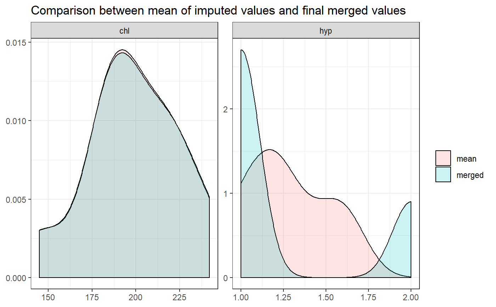

R/merge_imputations.R
merge_imputations.RdThis function merges multiple imputed data frames from
mids-objects into a single data frame
by computing the mean or selecting the most likely imputed value.
merge_imputations(dat, imp, ori = NULL, summary = c("none", "dens", "hist", "sd"), filter = NULL)
| dat | The data frame that was imputed and used as argument in the
|
|---|---|
| imp | The |
| ori | Optional, if |
| summary | After merging multiple imputed data,
|
| filter | A character vector with variable names that should be plotted. All non-defined variables will not be shown in the plot. |
A data frame with (merged) imputed variables; or ori with
appended imputed variables, if ori was specified.
If summary is included, returns a list with the data frame
data with (merged) imputed variables and some other summary
information, which are required for the plot-output.
This method merges multiple imputations of variables into a single
variable by computing the (rounded) mean of all imputed values
of missing values. By this, each missing value is replaced by
those values that have been imputed the most times.
imp must be a mids-object, which is returned by the
mice()-function of the mice-package. merge_imputations()
than creates a data frame for each imputed variable, by combining all
imputations (as returned by the complete-function)
of each variable, and computing the row means of this data frame.
The mean value is then rounded for integer values (and not for numerical
values with fractional part), which corresponds to the most frequent
imputed value (mode) for a missing value. Missings in the original variable
are replaced by the most frequent imputed value.
Typically, further analyses are conducted on pooled results of multiple
imputed data sets (see pool), however, sometimes
(in social sciences) it is also feasible to compute the mean or mode
of multiple imputed variables (see Burns et al. 2011).
Burns RA, Butterworth P, Kiely KM, Bielak AAM, Luszcz MA, Mitchell P, et al. 2011. Multiple imputation was an efficient method for harmonizing the Mini-Mental State Examination with missing item-level data. Journal of Clinical Epidemiology;64:787–93 doi: 10.1016/j.jclinepi.2010.10.011
library(mice)#>#> #>#> #> #>#> #> iter imp variable #> 1 1 bmi hyp chl #> 1 2 bmi hyp chl #> 1 3 bmi hyp chl #> 1 4 bmi hyp chl #> 1 5 bmi hyp chl #> 2 1 bmi hyp chl #> 2 2 bmi hyp chl #> 2 3 bmi hyp chl #> 2 4 bmi hyp chl #> 2 5 bmi hyp chl #> 3 1 bmi hyp chl #> 3 2 bmi hyp chl #> 3 3 bmi hyp chl #> 3 4 bmi hyp chl #> 3 5 bmi hyp chl #> 4 1 bmi hyp chl #> 4 2 bmi hyp chl #> 4 3 bmi hyp chl #> 4 4 bmi hyp chl #> 4 5 bmi hyp chl #> 5 1 bmi hyp chl #> 5 2 bmi hyp chl #> 5 3 bmi hyp chl #> 5 4 bmi hyp chl #> 5 5 bmi hyp chl# return data frame with imputed variables merge_imputations(nhanes, imp)#> bmi hyp chl #> 1 27.64 1 167 #> 2 22.70 1 187 #> 3 28.26 1 187 #> 4 23.06 2 206 #> 5 20.40 1 113 #> 6 23.38 2 184 #> 7 22.50 1 118 #> 8 30.10 1 187 #> 9 22.00 1 238 #> 10 26.26 2 193 #> 11 29.24 1 153 #> 12 23.96 1 176 #> 13 21.70 1 206 #> 14 28.70 2 204 #> 15 29.60 1 196 #> 16 29.68 1 166 #> 17 27.20 2 284 #> 18 26.30 2 199 #> 19 35.30 1 218 #> 20 25.50 2 205 #> 21 27.22 1 207 #> 22 33.20 1 229 #> 23 27.50 1 131 #> 24 24.90 1 212 #> 25 27.40 1 186# append imputed variables to original data frame merge_imputations(nhanes, imp, nhanes)#> age bmi hyp chl bmi_imp hyp_imp chl_imp #> 1 1 NA NA NA 27.64 1 167 #> 2 2 22.7 1 187 22.70 1 187 #> 3 1 NA 1 187 28.26 1 187 #> 4 3 NA NA NA 23.06 2 206 #> 5 1 20.4 1 113 20.40 1 113 #> 6 3 NA NA 184 23.38 2 184 #> 7 1 22.5 1 118 22.50 1 118 #> 8 1 30.1 1 187 30.10 1 187 #> 9 2 22.0 1 238 22.00 1 238 #> 10 2 NA NA NA 26.26 2 193 #> 11 1 NA NA NA 29.24 1 153 #> 12 2 NA NA NA 23.96 1 176 #> 13 3 21.7 1 206 21.70 1 206 #> 14 2 28.7 2 204 28.70 2 204 #> 15 1 29.6 1 NA 29.60 1 196 #> 16 1 NA NA NA 29.68 1 166 #> 17 3 27.2 2 284 27.20 2 284 #> 18 2 26.3 2 199 26.30 2 199 #> 19 1 35.3 1 218 35.30 1 218 #> 20 3 25.5 2 NA 25.50 2 205 #> 21 1 NA NA NA 27.22 1 207 #> 22 1 33.2 1 229 33.20 1 229 #> 23 1 27.5 1 131 27.50 1 131 #> 24 3 24.9 1 NA 24.90 1 212 #> 25 2 27.4 1 186 27.40 1 186# show summary of quality of merging imputations merge_imputations(nhanes, imp, summary = "dens", filter = c("chl", "hyp"))